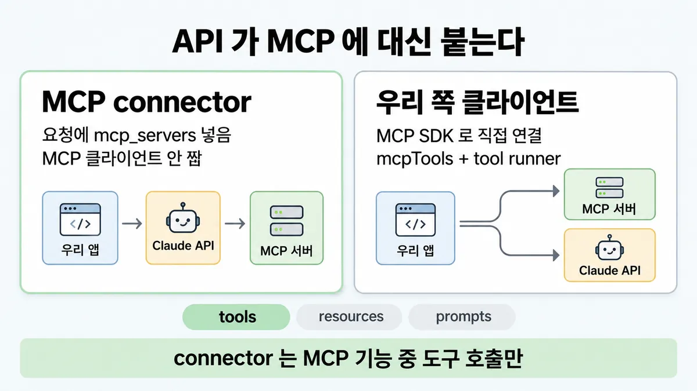
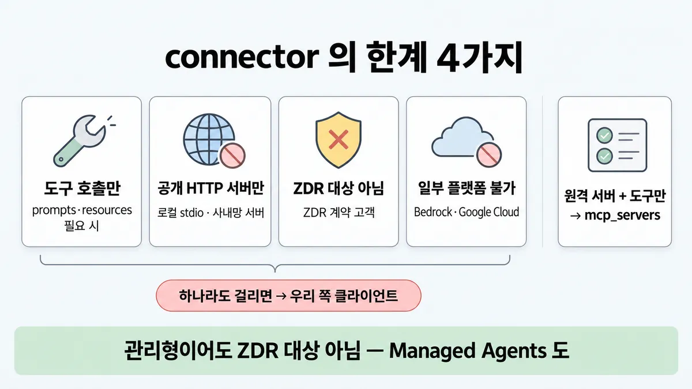
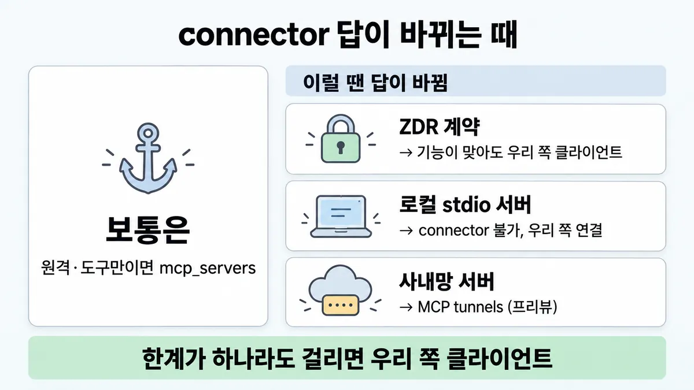

■ MCP connector
표시가 없는 문장은 공식 문서에서 확인한 내용이에요. 다른 표시는 읽는 법
왜 배우나 — 시험이 요구하는 것
시험 목표 3.7 연결 방식 고르기 · D3 연결 19%Evaluate connection protocols and select the appropriate integration mechanism (MCP, API/CLI, agent-to-agent)
이 개념으로 푸는 판단 (할 수 있어야 하는 것)
- 3.7① ZDR 계약 고객용 에이전트에 사내 원격 MCP 서버의 도구·prompts 를 Messages API 로 바로 붙이려 한다 — MCP connector 로 되나? — MCP connector vs 우리 쪽 클라이언트가 MCP 를 맡는 구현
- 3.2① 같은 머신의 stdio MCP 서버와 원격 HTTP MCP 서버를 함께 붙인다 — 자격증명을 각각 어떻게 주나? — 전송 방식별 인증 고르기
한눈에
Messages API 요청에 mcp_servers 를 넣으면 API 가 원격 MCP 서버에 붙어 도구를 부름 — 우리가 MCP 클라이언트를 안 짜도 됨. 베타(헤더 mcp-client-2025-11-20)
MCP 서버의 세 요소 = tools(모델이 부름) · resources(앱이 가져옴) · prompts(사용자가 누름) — connector 는 첫째만 (Skilljar)
비유 GitHub-hosted runner — 관리형이라 편하지만 공개망만 닿고 옵션이 좁음. 사내망·규정 요구면 self-hosted runner(= 우리 쪽 클라이언트)


ELI5
택배 회사가 "집 앞까지 가져다줄게요" 하는데, 큰길가 집만 가요.
- 큰길가(공개 인터넷) 집이면 제일 편해요.
- 골목 안(사내망·내 컴퓨터) 집은 직접 가지러 가야 해요.
- 물건 중 "상자"만 날라 주고 "편지·사진"은 안 날라요.
- 택배 기록을 지워 주는 약속(ZDR)도 안 돼요.
개념 설명
원리
누가 MCP 클라이언트인가
- connector = Anthropic API 쪽이 MCP 클라이언트 역할. 우리는 요청에 서버 URL 만 적음 → 코드 가장 적음.
- 그래서 API 가 닿을 수 있는 곳만 됨 : 공개 HTTPS. 우리 머신의 stdio 프로세스·방화벽 안 서버는 못 닿음.
- 데이터가 Anthropic 을 거쳐 MCP 서버와 오감 → 도구 정의·결과가 표준 보존 정책을 따름 → ZDR 대상 아님.
기능 범위
- MCP 서버 요소 셋 : tools(모델이 부름) · resources(앱이 가져와 컨텍스트에) · prompts(사용자가 고르는 틀). connector 는 tools 만.
- resources·prompts 는 앱·사용자가 쓰는 요소라, 앱 쪽에 클라이언트가 있어야 자연스러움.
대안 = 우리 쪽 클라이언트
- 우리 앱이 MCP SDK 로 서버에 직접 연결 → SDK 도우미로 MCP 도구·프롬프트·리소스를 Claude API 형식으로 변환. 로컬·사내망·prompts·resources·ZDR 전부 우리 통제(control).
- 대가 = 연결 코드와 운영을 우리가 짐.
규칙과 판단


갈림길
①②⑤ connector 로 되나 [3.7①]
우리 쪽 클라이언트
MCP 기능 중 도구 호출만 (resources·prompts 없음)
우리 쪽 클라이언트
로컬 stdio 직접 불가
우리 쪽 클라이언트 · tunnels
서버는 HTTP 로 공개 노출 · MCP tunnels(리서치 프리뷰, 2026-05-19) / 프리뷰라 시험 정답 선택지로는 약함 (추론)
우리 쪽 클라이언트
ZDR 대상 아님 (도구 정의·실행 결과까지 표준 보존 정책이 적용됨)
우리 쪽 클라이언트
Amazon Bedrock · Google Cloud = 안 됨 (2026-09-28 조회)
mcp_servers
URL 로 닿는 원격 서버 + 도구만 → mcp_servers
③ 도구 세트 좁히기 [3.7①]
denylist
쓰기·파괴 도구 enabled: false
allowlist
default_config.enabled: false + 필요한 것만
defer_loading + tool search
흐름
그림 속 이름·금액·시간·토큰 수는 예시예요. 공식 한도·동작은 카드 본문 값이 기준.
장면 글로 보기
칸 : 우리 앱 → Claude API → MCP 서버
질문 : MCP 연결은 누가 맡아야 할까?
① connector ✓
- 시작 : 우리 앱 — 말 : “주문 A-1024 배송 어디쯤이에요?”
- 요청 : 우리 앱 → Claude API :
mcp_servers·mcp_toolset— 쪽지 : mcp_servers: / url: https://mcp.ship… / tools: mcp_toolset - 도구 호출 : Claude API → MCP 서버 : 공개 HTTP ·
https://— 쪽지 : tools/call / track_order(A-1024) - 끝 : API 가 원격 MCP 서버에 붙어 도구를 부름 — 우리는 MCP 클라이언트를 안 짬
② 로컬 stdio 서버 ≠
- 시작 : 우리 앱 — 말 : “사내 CRM 에서 / 이 고객 찾아 줘”
- 요청 : 우리 앱 → Claude API :
mcp_servers— 쪽지 : mcp_servers: / 로컬 stdio 서버 crm - 도구 호출 : Claude API → MCP 서버 : 로컬 stdio 직접 불가 — 쪽지 : 닿지 못함 / 공개 https:// 만
- 끝 : 한계가 하나라도 걸리면 우리 쪽 클라이언트가 MCP 연결을 맡음
③ 우리 쪽 클라이언트 ✓
- 시작 : 우리 앱 — 말 : “주문 A-1024 배송 어디쯤이에요?”
- 연결 : 우리 앱 → MCP 서버 : MCP SDK 로 직접 연결 — 쪽지 : tools/list → / track_order 외 2개
- 변환 : 우리 앱 : 변환 도우미
mcpTools— 쪽지 : mcpTools(목록) → / Claudetools형식 - 요청 : 우리 앱 → Claude API : tool runner — 쪽지 : tools: [track_order …] / mcp_servers 없음
- 끝 : 로컬 서버·prompts·resources·ZDR·연결 제어가 걸리면 클라이언트 도우미로 우리가 연결
나머지 규칙
-
인증(authentication) : OAuth 흐름·갱신은 호출 전에 우리가 →
authorization_token에 액세스 토큰 → ■ MCP 인증·인가 -
Batches API 요청에도
mcp_servers가능, 요금은 일반 요청과 같음시험 뒤 변경 : 도구 목록 고정 베타 헤더
mcp-client-2026-09-15(2026-09-22) — 서버가 대화 중 도구를 바꿔도 Claude 가 보는 목록이 안 바뀜. 옛 헤더mcp-client-2025-04-04는 폐기
규칙 원문 ①②③⑤ (갈림길로 그린 규칙)
-
한계 4 — 하나라도 걸리면 우리 쪽 클라이언트가 MCP 연결을 맡음 [3.7①]
한계 걸리는 요구 MCP 기능 중 도구 호출만 (resources·prompts 없음) prompts·resources 필요 서버는 HTTP 로 공개 노출(Streamable HTTP·SSE) · URL 은 https://· 로컬 stdio 직접 불가로컬 서버 · 사내망 서버 ZDR 대상 아님 (도구 정의·실행 결과까지 표준 보존 정책이 적용됨) ZDR 계약 플랫폼 : Claude API · Claude Platform on AWS · Microsoft Foundry = beta / Amazon Bedrock · Google Cloud = 안 됨 (2026-09-28 조회) Bedrock·Google Cloud 로 Claude 를 씀 -
우리 쪽 클라이언트 = MCP SDK 로 직접 연결 + Anthropic SDK 변환 도우미(
mcpTools·mcpMessages·mcpResourceToContent·mcpResourceToFile) + tool runner공식 갈림 : URL 로 닿는 원격 서버 + 도구만 →
mcp_servers. 로컬 서버·prompts·resources·연결 제어 → 클라이언트 도우미 -
설정 : 서버 정의(
mcp_servers: url·name·authorization_token) + 도구 세트(tools안mcp_toolset). 서버마다 도구 세트 정확히 하나. 기본 = 모든 도구 켬 → allowlist(default_config.enabled: false+ 필요한 것만) · denylist(쓰기·파괴 도구enabled: false) ·defer_loading+ tool search → ■ 최소 권한 · ◆ 도구 미리 싣기 vs tool search -
사내망 서버를 connector 로 : MCP tunnels(리서치 프리뷰, 2026-05-19) — 바깥으로만 나가는 연결, 인바운드 포트·공개 노출 불필요. 터널은 서버 인증을 대신 안 함(서버 OAuth 따로). ZDR·BAA 적격은 별도 문서 / 프리뷰라 시험 정답 선택지로는 약함 (추론)
더 깊이 : 판단 규칙 · 상황 변수 (설명)
판단 규칙
| 조건 | 답 | 근거 |
|---|---|---|
| 공개 원격 서버 + 도구만 필요 | connector (mcp_servers) | mcp-connector md 원본 |
| prompts 또는 resources 필요 | 우리 쪽 클라이언트 + SDK 도우미 | mcp-connector |
| 로컬 stdio 서버 | 우리 쪽 클라이언트 | mcp-connector |
| ZDR 계약 필요 | connector 안 됨 → 우리 쪽 클라이언트 | mcp-connector |
| Amazon Bedrock · Google Cloud 로 Claude 사용 | connector 안 됨 | mcp-connector md 원본 |
| Claude API · Claude Platform on AWS · Microsoft Foundry | connector 베타로 됨 | mcp-connector md 원본 |
| 서버 도구 중 일부만 켜야 함 | mcp_toolset allowlist/denylist | mcp-connector |
| 서버가 OAuth 요구 | 우리가 흐름 처리 → authorization_token | mcp-connector |
| 여러 서버 · 도구 수십 개 | defer_loading + tool search | mcp-connector |
상황 변수
| 변수 | 값 | 답 쪽 | 등급 | 근거 |
|---|---|---|---|---|
| 서버 위치 | 공개 인터넷 HTTPS | connector 가능 | 판단 규칙 1 | |
| 서버 위치 | 사내망 | 기본은 우리 쪽 클라이언트. tunnels 프리뷰면 connector 도 | (tunnels 문장) · 추론(프리뷰라 정답 선택지로는 약함) | mcp-tunnels |
| 서버 위치 | 같은 머신 stdio | 우리 쪽 클라이언트 | mcp-connector | |
| 필요한 요소 | tools 만 | connector 가능 | mcp-connector | |
| 필요한 요소 | prompts·resources | 우리 쪽 클라이언트 | mcp-connector | |
| 데이터 보존 | 표준으로 괜찮음 | connector 가능 | mcp-connector | |
| 데이터 보존 | ZDR 필수 | 우리 쪽 클라이언트 (Managed Agents 도 대상 아님) | mcp-connector · managed-agents | |
| 플랫폼 | Bedrock·Google Cloud | 우리 쪽 클라이언트 | md 원본 | |
| 호출 방식 | Batches API | connector 가능, 요금 같음 | mcp-connector |
연습 문제
고객사가 공개 HTTPS 로 열린 배송 조회 MCP 서버공개 서버의 도구 3개만 쓰려 한다. 다만 이 고객사는 Anthropic 과 ZDR 계약을 맺고 있다ZDR 계약. 코드를 가장 적게 쓰려고 요청에 mcp_servers 를 넣자는 제안이 나왔다. 어떻게 연결할까?
시험 대비
함정
- "connector 로 로컬 stdio 서버도 연결" → 로컬 stdio 직접 불가, 서버는 HTTP 로 공개 노출
- "connector 에서 resources·prompts 도 쓴다" → MCP 기능 중 도구 호출만 (resources·prompts 없음)
- "관리형이니 ZDR 도 알아서 맞는다" → 대상 아님
- 반대로 넓힌 "클라우드 플랫폼에선 전부 불가" → Foundry·Claude Platform on AWS 는 beta. 안 되는 건 Bedrock·Google Cloud
- "사내망 서버는 connector 로 절대 못 붙임" → tunnels 프리뷰가 있음 (단 프리뷰)
- "그럼 Managed Agents 로 돌리면 ZDR 해결" → Managed Agents 도 ZDR·HIPAA BAA 대상 아님 → ◆ 직접 API vs Agent SDK vs CLI vs Managed Agents
- "규제 고객이면 클라이언트 측" 은 공식 문장이 아니라 ① 표에서 나오는 추론 (목록 메모와 같음)
신호
"Of the feature set of the MCP specification, only tool calls are currently supported."
"The server must be publicly exposed through HTTP (supports both Streamable HTTP and SSE transports). Local STDIO servers cannot be connected directly."
"The MCP connector is not covered by ZDR arrangements."
"Use the client-side helpers when you need local servers, prompts, resources, or more control over the connection with the base SDK."
"Denylisting write or destructive tools is recommended when building read-only assistants"


더 깊이 : 뒤집히는 때 · 오답 재료 (설명)
뒤집히는 때
1. 사내망인데 connector 가 되는 때
- 조건 : 사내 MCP 서버를 공개하지 않고 connector 로 쓰고 싶다.
- 판단 : MCP tunnels(2026-05-19 리서치 프리뷰) — 우리 망 안의 cloudflared 가 바깥으로만 연결, 인바운드 포트 안 엶. 터널 호스트명을
mcp_serversurl 로. 서버 OAuth 는 따로. - 등급 : (기능) · 추론(시험은 프리뷰 기능을 정답으로 쓰기 어려움 — 지문에 tunnels 가 나오지 않으면 "사내망 = 우리 쪽 클라이언트"가 안전)
- 근거 : mcp-tunnels · 릴리스 노트
- 주의 : tunnels 의 ZDR·BAA 적격은 이 문서에 없고 별도 문서를 가리킴(미해결 1).
2. 도구만 필요한데도 connector 가 안 되는 때
- 조건 : 공개 HTTPS 서버, 도구만 쓰는데 고객이 ZDR 계약.
- 판단 : 기능은 맞아도 ZDR 한계 하나로 탈락 → 우리 쪽 클라이언트. "기능만 맞으면 connector" 로 고르면 틀림.
- 근거 : mcp-connector
3. 한계가 하나도 안 걸리는 때
- 조건 : 공개 SaaS MCP 서버, 도구만, Claude API 직접 사용, ZDR 없음.
- 판단 : connector 가 가장 단순. 여기서 "우리가 MCP 클라이언트를 직접 짠다"는 과설계 쪽.
- 등급 : (connector 가능) · 업계 일반(과설계 판단)
- 근거 : mcp-connector · building-effective-agents "finding the simplest solution possible"
4. 대화 도중 서버 도구가 바뀌는 때
- 조건 : 서버가 배포 중 도구 이름을 바꿔 긴 대화 중간에 Claude 가 보는 목록이 달라짐.
- 판단 :
mcp-client-2026-09-15로 목록을 기록·고정. 2026-09-22 추가라 시험 범위 밖일 가능성. - 등급 : · 시험 뒤 변경
- 근거 : mcp-connector · 릴리스 노트
오답 재료
| 오답 | 왜 끌리나 | 왜 틀리나 | 근거 |
|---|---|---|---|
| "connector 로 로컬 stdio 서버도 연결" | MCP 면 다 된다는 감 | 공개 HTTP 서버만 | mcp-connector |
| "connector 에서 resources·prompts 도 쓴다" | MCP 표준 기능이니까 | 도구 호출만 | mcp-connector |
| "관리형 기능이니 ZDR 도 된다" | Anthropic 이 관리하면 규정도 맞을 것 같음 | ZDR 대상 아님 | mcp-connector |
| "Bedrock·Vertex·Foundry 전부 connector 불가" | 클라우드 = 제한 감 | Foundry·Claude Platform on AWS 는 beta | md 원본 |
| "Bedrock 에서도 connector 쓴다" | 같은 Claude 모델 | Bedrock·Google Cloud 는 안 됨 | md 원본 |
| "Managed Agents 로 옮기면 ZDR 해결" | 호스팅이 다르니 | Managed Agents 도 ZDR·BAA 대상 아님 | managed-agents |
| "서버를 붙이면 필요한 도구만 켜진다" | 알아서 고를 것 같음 | 기본 = 모든 도구 켬. 끄려면 configs | mcp-connector |
참고
출처
- 가이드 목표 3.7 공식 시험 가이드 v1.0
- mcp-connector (md 원본 en-mcp-connector-source)
- mcp-tunnels overview
- 릴리스 노트
- Skilljar MCP 296691
상태
- 시험 뒤 변경 1곳
- 추론 2줄
미해결
- MCP tunnels 의 ZDR·HIPAA BAA 적격 : overview 는 "API and data retention" 문서를 가리키기만 함. 그 문서는 이번에 안 받음.
- 목록 3.7① 의 "Microsoft Foundry·Claude Platform on AWS 는 beta — 2026-09-27 조회값" → 2026-09-28 md 원본 머리 표로 같은 값 확인. 이 표는 defuddle 본문에 안 나와 md 원본을 따로 받음(
en-mcp-connector-source.md). - 목록의 "헤더 mcp-client-2025-11-20 현행 · 2025-04-04 폐기 · 새 헤더 mcp-client-2026-09-15" 확인됨. 단 새 헤더는 "Claude API 에서 사용 가능"이라 다른 플랫폼에서 되는지는 미확인.